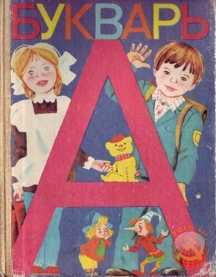
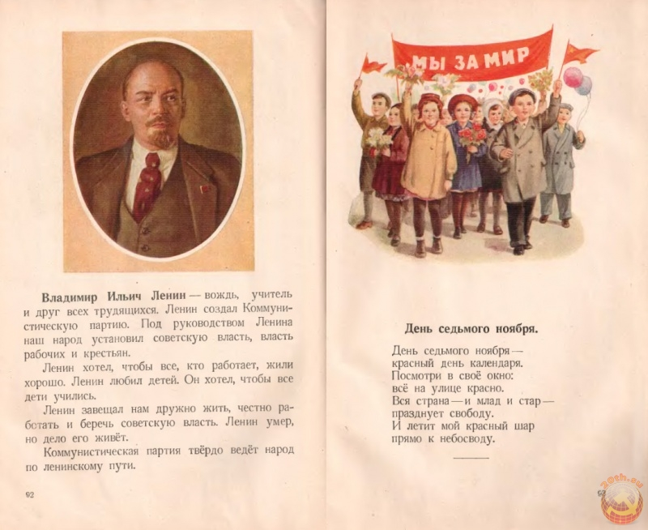
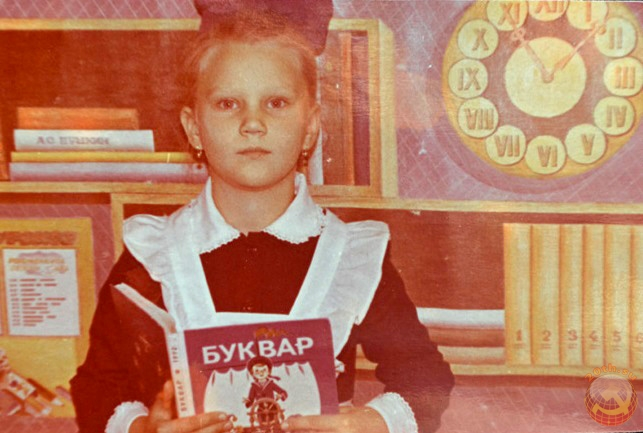
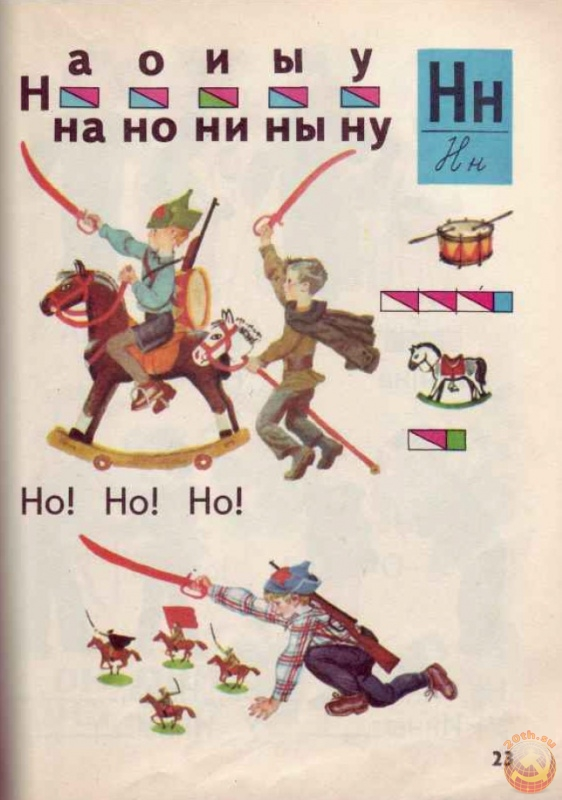
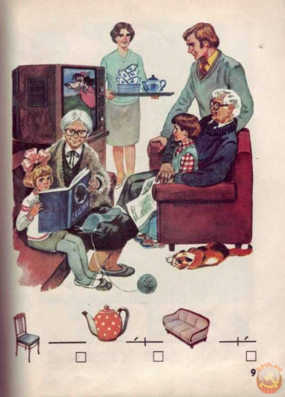

Советский букварь
Букварь — начало начал. Букварь — это первая книга первоклашки.
Почти каждый советский мальчишка и девчонка начинали нелегкий путь познаний именно с этой книги. Букварь — это книга, которая первая давала советским детям образование, любовь к Родине, близким. Может быть поэтому, чтобы не забыть свой первый учебник нас, первоклашек, фотографировали именно с букварем на парте или в руках. У многих наверное есть такие фото. И спустя много лет, мне случайно попалась в руки эта книга. Полистав букварь, я прослезилась от нахлынувшей ностальгии. Видя, запомнившиеся с детства иллюстрации в учебнике, в памяти всплывают ассоциации с которыми они связаны. Вот на этой странице я по слогам читала всему классу стишок про рукавички, а глядя на картинку веселых детей, катающихся с горки, мне хотелось чтобы скорее закончились занятия и бежать на застывший льдом пруд кататься с огромной горки. Можете и у вас, после просмотра букваря, всплывут какие-то воспоминания о детстве и школьных годах.

Советский букварь. 7-е издание 1987
В Стране Советов образование было на очень высоком уровне и при этом (сейчас трудно в это поверить) бесплатным. Каждый советский школьник знал, что делая упор только на собственные знания, можно поступить в высшее учебное заведение без взятки или «волосатой» руки. Поэтому многие ребята стремились окончить школу с «красным» дипломом. А с чего же начиналось образование школьника? Конечно же, с него – с «Букваря»!

Сейчас практически всех детей отдают в школу с шести лет. При этом учителя требуют, что б ребенок уже умел бегло читать и владел счетом. Сейчас малышат просто вынуждают рано повзрослеть и не потому, что их детство лишено воздушных шаров и игрушек, а потому, что детская безмятежная беззаботность заканчивается ровно в пять лет, когда начинается «беспросветная» учеба на подготовительных курсах… А ведь в Союзе такого не было: и уроков задавали меньше и на спорт и дворовые игры времени хватало. Помню, мы шли в первый класс с семи-восьми лет, при этом, не умея читать и считать. И уроков нам задавали меньше, чем сейчас. Например, мой первоклашка, отсидев в школе семь! уроков, приносит домой «горы» домашнего задания по письму, математике, природоведению, английскому, труду…

Вот я все ворчу, наверное, это от того, что даже мед в детстве казался слаще. До сих пор с радостным чувством вспоминаю свой первый звонок, первую учительницу Лидию Ивановну, как она, стоя у классной доски, держала в руках «Букварь» и торжественно произносила: «это самая главная книга в вашей жизни, с нее вы начнете свое путешествие в мир знаний…». Размышляя так, я расчищала книжные полки для новых книг своего первоклашки и в самом углу нашла, не поверите, «Букварь»! Здравствуй, старый друг! Открываю первую страницу… ай да Лидия Ивановна… свою речь она позаимствовала оттуда, только забыла добавить, что «благодаря «Букварю» ты научишься писать свои первые слова «мама», «Родина» и «Ленин»!». А еще где-то из глубин памяти всплывает воспоминание о том, что была такая традиция: всех первоклашек усаживали за парту с «Букварем» в руках для фото. Наверное, у каждого советского школьника была такая фотография, которая потом с гордостью подписывалась на обратной стороне «1 сентября 1969 год. Ваня». А помните шутку: «мама мыла раму, а рама мыла маму»? Так вот, оказывается, предложение «мама мыла раму» было только в «Букваре» 1959-го года. И, возвращаясь к моему сыну-школьнику, у него в современном «Букваре» Жуковой есть фраза «Вова моет раму». Понятно, откуда ноги растут?

Вообще мне стало интересно, а сколько же «Букварей» вышло в Союзе, кто был автором? Давай-ка, старый друг моего краснознаменного детства, поведай мне свои секреты. Официально в Стране Советов «Букварь» «появился на свет» в 1937 году, под авторством заслуженного учителя Николая Головина. Народ сразу же «пошутил» на его счет: детей учила вся страна по «Букварю» Головина. Затем, это издание перерабатывалось и дополнялось новыми примерами, прописями, картинками из народных сказок про «Колобка», «Курочку рябу», «Репку» и так далее. Причем, давались только картинки, для того, что б развивать устную речь ребенка (он должен был, глядя в учебник, рассказать наизусть заданную сказку). Помню, как мы рассказывали сказу «О золотой рыбке» всем классом, по цепочке, каждый по одному предложению. Рассказ выходил немного забавный и не всегда правдоподобный. Причем, деткам было довольно просто ориентироваться в «Букваре»: гласные обозначались красным прямоугольником, согласные – зеленым. Также были социально-полезные изображения: вот девочка поливает цветы, а вот – переводит бабушку через дорогу. Обязательно была страница с портретом Ленина и описанием того, как он заботится о детях (сколько не просматривала первых учебников, портрет Сталина так и не нашла). Всегда был раздел «о Родине»: картинка с картой Союза и изображениями детей в национальных костюмах.

Итак, «Букварь» издавался в Москве, в издательстве «Просвещение». Редколлегия очень ответственно относилась к иллюстрациям книги. Экспертная комиссия детально просматривала рисунки «Букваря»: они не должны были быть излишне перегружены деталями. Должны нести положительно-воспитательный и ярко-выразительный характер, ведь, считалось, что психика ребенка очень уязвима и имеет образное, а не логическое мышление. Поэтому не удивительно, что к росписи «Букваря» привлекались опытные, даже известные художники, например Ежкова В., Богданов В., Никулина Т. «Букварь» издавался в 1943, 1945, 1950, 1951, 1952, 1959, 1962,1963, 1967, 1970, 1983, 1987. Как правило, каждый выпуск учебника создавался коллективом авторов. Однако наиболее известными в этой области были: Головин Н. («Букварь» 1937-44 года), Воскресенская А. («Букварь» 1952 год, 9-е издание и «Букварь» 1959 год 16-е издание), Архангельская Н. (1967 и 1970 год 5-е издание), Свадковский И. (1962 год 10-е издание), Горбушина А. (1983 год 23-е издание), Горецкий В. 1987 (7-е издание). Так и хочется с любовью сказать «спасибо!» за эту первую в жизни книгу и за пожелтевшее от времени фото той кудрявой первоклассницы 1970-го года, которая так гордо улыбается в обнимку со своим «Букварем». И мы все, рожденные в СССР, знаем с чего начинается Родина!